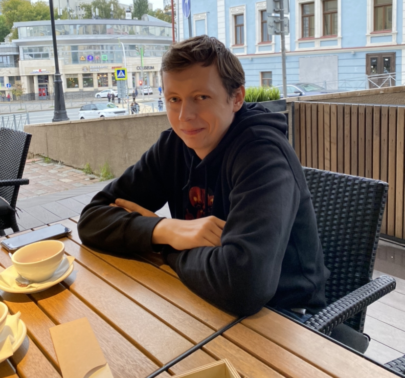
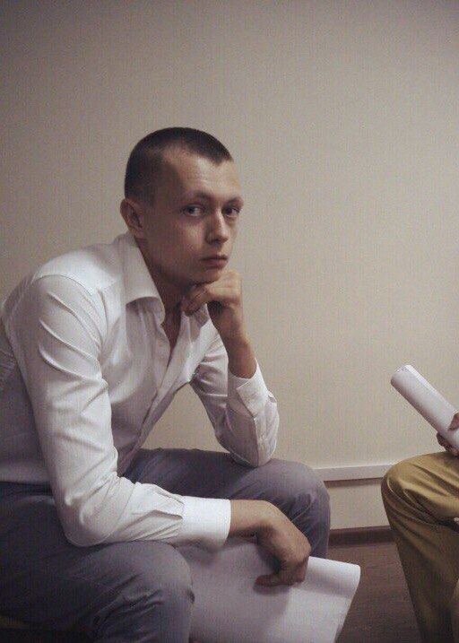

тут будут ссылки на файлы фото со свойствами display: flex и растоянием justify-content: space-around;



Краткая биография
Сейчас я прохожу Elbrus bootcamp.
Я люблю свою семью и родных.
Люблю и стараюсь постоянно развиваться.
Увлекаюсь основами программирования
Для большого абзаца пока вставлю открывок биографии Бенджамина
Франклина
Бе́нджамин Фра́нклин (англ. Benjamin Franklin [ˈbɛndʒəmɪn
ˈfɹæŋklɪn]; 17 января 1706, Бостон, Провинция Массачусетс-Бэй,
Британская империя — 17 апреля 1790, Филадельфия, Пенсильвания,
США) — американский политический деятель, дипломат[1],
изобретатель[2], учёный[3], философ, писатель, масон, полимат.
Бенджамин Франклин — единственный из отцов-основателей,
скрепивший своей подписью все три важнейших исторических
документа, лежащих в основе образования Соединённых Штатов
Америки как независимого государства: Декларацию независимости
США, Конституцию США и Версальский мирный договор 1783 года
(Второй Парижский мирный договор), формально завершивший войну
за независимость тринадцати британских колоний в Северной
Америке от Великобритании. Один из разработчиков дизайна Большой
печати США. Первый американец, ставший иностранным членом
Императорской академии наук и художеств (с 1917 года —
Российская академия наук). Основал Пенсильванский университет.
Общался с Д. И. Фонвизиным. Портрет Бенджамина Франклина
изображён на стодолларовой купюре федеральной резервной системы
США с 1914 года. Франклин является автором афоризма «Время —
деньги» (из «Советов молодому торговцу», 1748). Бенджамин
Франклин родился 17 января 1706 года на улице Милк-Стрит
(англ.)рус. в Бостоне пятнадцатым ребёнком в семье эмигрантов из
Англии Джозайи Франклина (англ.)рус. (1657—1745), ремесленника,
занимавшегося изготовлением мыла и сальных свечей, и Абии
Фолджер. Образование получил в основном самостоятельно. Джозайя
хотел, чтобы сын ходил в школу, но денег у него хватило лишь на
два года обучения. С 12 лет Бенджамин начал работать
подмастерьем в типографии своего брата Джеймса, а печатное дело
стало его основной специальностью на многие годы. В 1723 году
Франклин, не найдя работы в Нью-Йорке, перебрался в Филадельфию
и поступил рабочим в типографию[4]. Губернатор Пенсильвании
Вильям Кейс (англ.)рус. предложил Франклину отправиться в
Лондон, чтобы усовершенствоваться в типографском искусстве.
Однако в Лондоне вследствие неисполнения данных ему Кейсом
обещаний Франклин очутился буквально на улице. Он работал в
лондонских типографиях и через полтора года возвратился в
Америку. В 1727 году создал в Филадельфии кружок
взаимного просвещения и самоусовершенствования. В
1727 году Франклин основал в Филадельфии собственную типографию.
С 1729 по 1748 год он издавал «Пенсильванскую газету», а с 1732
по 1758 год — ежегодник «Альманах бедного Ричарда». В 1728 году
Бенджамин Франклин основал Филадельфийский дискуссионный кружок
ремесленников и торговцев «Клуб кожаных фартуков» («Хунта»),
превратившийся в 1743 году в Американское философское общество.
В 1731 году основал первую в Америке публичную библиотеку, в
1751 году Филадельфийскую академию, ставшую основой
Пенсильванского университета. С 1737 по 1753 год он исполнял
должность почтмейстера Пенсильвании, с 1753 по 1774 год — ту же
должность в масштабе всех североамериканских колоний. В 1736
году Франклин был избран в пенсильванское провинциальное
собрание, где тотчас же стал весьма влиятелен. Был Франклин по
выбору и мировым судьёй (не оставляя своей должности
почтмейстера), выбирался и на другие почётные должности. Во
время войны с французами и индейцами Франклин всеми мерами
старался побудить своих сограждан помогать метрополии. Он
организовал милицию, состоявшую (для всей Пенсильвании) из 12
тысяч человек, — и в 1754 году эта милиция сыграла значительную
роль в обороне колонии, оставшейся совсем беззащитной после
поражения регулярной британской армии. Франклин сам принимал
деятельное участие в войне; он же бескорыстно (и в прямой себе
убыток) организовал тогда британскую интендантскую часть. В 1737
г. его избрали директором пенсильванской почты.[4]. Политическая
карикатура Франклина «Объединимся или умрём» (1754). В 1754 году
губернаторы тринадцати колоний созвали своих представителей в
Олбани на Олбанский конгресс для выработки системы общей обороны
против французов. Франклин воспользовался конгрессом, чтобы
предложить план федерации колоний. Каждая колония должна была
выбирать от 2 до 7 депутатов в общее колониальное собрание,
которое бы ведало вопросы обороны от индейцев и от других врагов
и пр. Президент собрания назначался бы британским
правительством; выборы депутатов производились бы раз в три
года; собрание должно было иметь право налагать налоги на всю
федерацию. Конгрессу в Олбани этот проект понравился, но
британское правительство оставило его без рассмотрения, да и
отдельные провинциальные собрания отнеслись к нему по разным
причинам довольно холодно. Оставаясь лояльным британским
подданным, Франклин, тем не менее, стал приходить все более и
более в обостренные отношения с представителями метрополии: в
пенсильванском провинциальном собрании он сделался главой
оппозиции против губернатора, который слишком деспотически
пользовался своим правом неутверждения постановлений собрания.
Но бороться с губернатором в Филадельфии, где закон давал
твердую почву для его произвола, было немыслимо; поэтому
собрание решило отправить Франклина в Лондон для
исходатайствования у британского правительства некоторого
ограничения прав губернатора. С небольшим перерывом Франклин
оставался в Лондоне до 1762 года, а затем вернулся туда в 1763
году представителем от колоний, желавших избавиться от налога,
который Великобритания вводила в Америке для покрытия расходов
на войну с Францией.